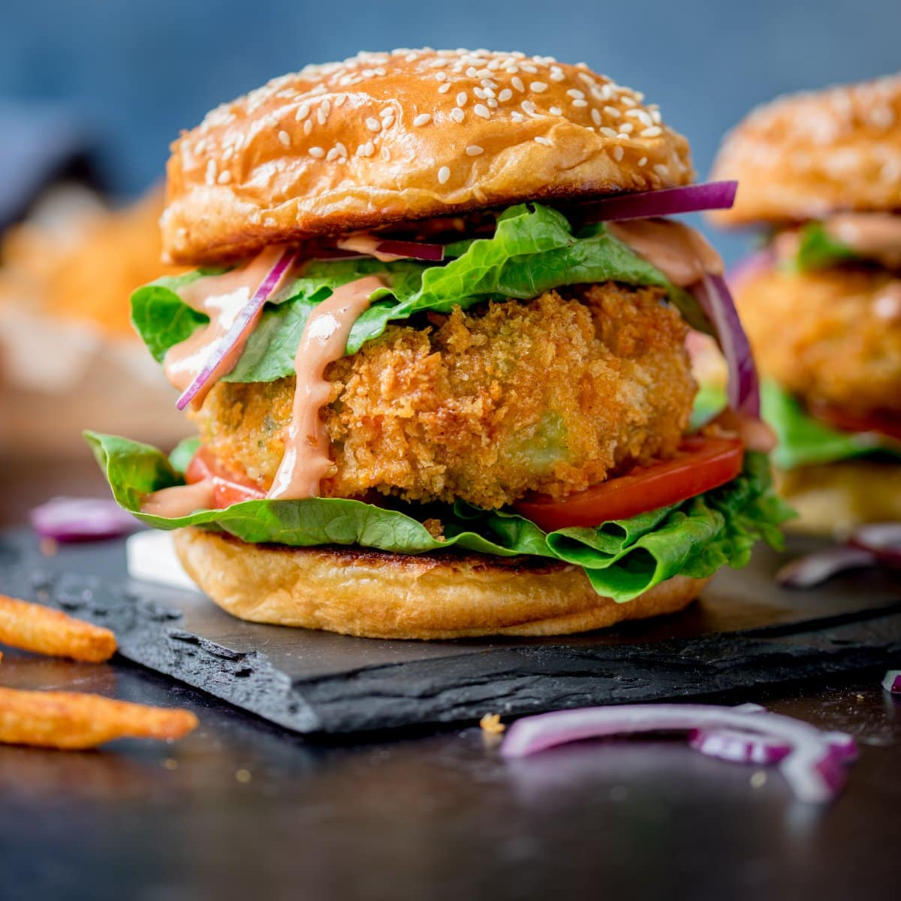

Pizza

Pizzais a savory dish of Italian origin consistin g of a usually round, flattened base of leavened wheat-based dough topped with tomatoes, cheese, and often various other ingredients (such as anchovies, mushrooms, onions, olives, pineapple, meat, etc.), which is then baked at a high temperature, traditionally in a wood-fired oven.A small pizza is sometimes called a pizzetta. A person who makes pizza is known as a pizzaiolo.
Burger

A hamburger is a sandwich consisting of one or more cooked patties of ground meat, usually beef, placed inside a sliced bread roll or bun. The patty may be pan fried, grilled, smoked or flame broiled. Hamburgers are often served with cheese, lettuce, tomato, onion, pickles, bacon, or chiles; condiments such as ketchup, mustard, mayonnaise, relish, or a "special sauce", often a variation of Thousand Island dressing; and are frequently placed on sesame seed buns.
Sandwich

A sandwich is a food typically consisting of vegetables, sliced cheese or meat, placed on or between slices of bread, or more generally any dish wherein bread serves as a container or wrapper for another food type.[1][2][3] The sandwich began as a portable finger food in the Western world, though over time it has become prevalent worldwide.Sandwiches are a popular type of lunch food, taken to work, school, or picnics to be eaten as part of a packed lunch.